Overview
Travel memories are deeply sensory — the quality of light in a particular afternoon, the colour palette of a city you loved. Yet when we try to share them, we reach for photos that show the place but rarely convey how it felt. Luma was an attempt to close that gap.
Luma is an immersive, physical installation that lets people re-live a travel memory inside a personal dome — an umbrella. Colours extracted from a user's photo are translated into light and ambient sound, creating a calm, meditative space unique to that memory. In shared settings, two domes can approach each other and "contaminate" one another's colour fields, turning private memory into a collective experience.
I contributed to the initial concept and idea generation, and was hands-on during the creation of the phygital installation itself. My main individual lead was the user testing: I planned both testing rounds, facilitated the sessions, and synthesised the insights that drove our iterations between round one and round two.
- Figma
- Arduino/ESP32
Concept
Rooted in the metaphor of the umbrella as a personal dome, Luma explores how light and sound can embody memory. Photos become palettes, not pictures, preserving intimacy while evoking place. When multiple domes meet, their color fields blend — making memory sharing visible and felt.
Our process
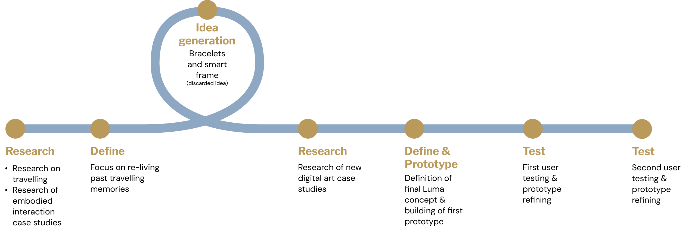
Our approach
As a project we decided to use the Research through Design approach — experimenting with future practices and experiences using objects that might be. This way we aimed at researching the correlation between feelings experienced while traveling and the recall of these feelings through colors, in a personal and meditative space.
Prototyping
The first prototype used: an Arduino Uno, a Powerbank (to make the umbrella portable), an Accelerometer (to detect twisting), a Proximity sensor (to detect a second umbrella), and LED strips as the main interface.


Image processing
To process the images and transform them into colours for the umbrella, we used sample images representing what users could upload in an ideal scenario. The image would be scaled and through a program we'd detect the overall distribution of RGB colours (shown before the twirling motion). After the twirl, the image would be divided into four sections and the average colour of each section would appear in the umbrella LEDs.
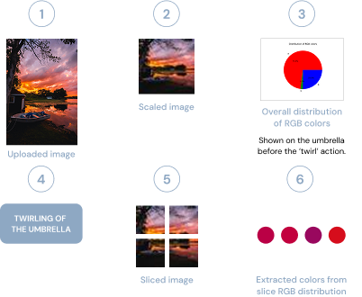
User Testing
Round 1 (8 users)
Research questions: Does twirling feel natural? Do users associate colours to images? Do users understand the two-umbrella interaction?
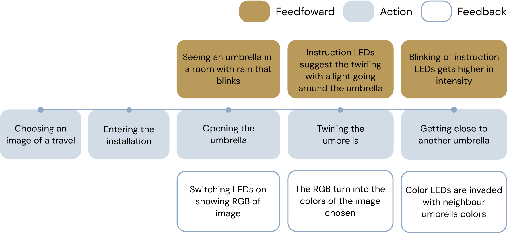
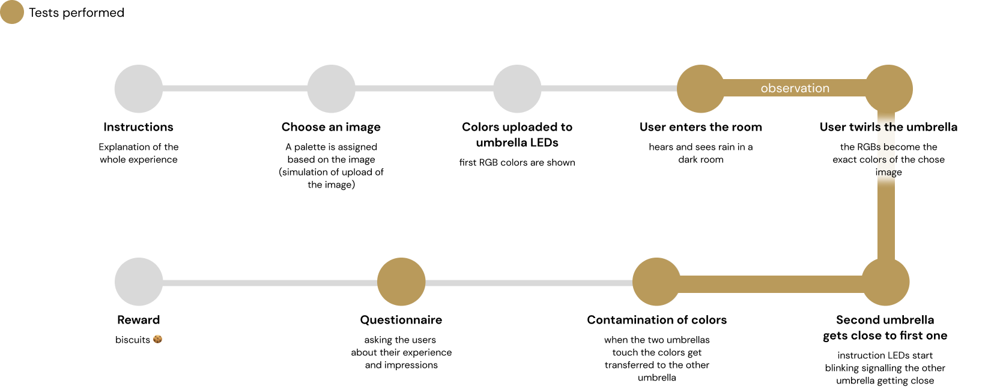
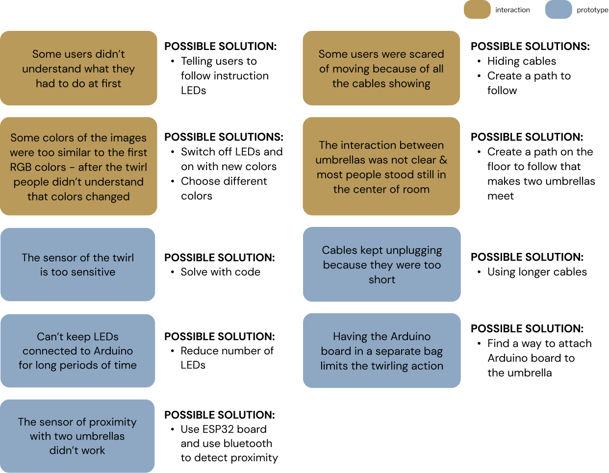
Round 2 (16 users)
To address problems from round one we integrated: an ESP32 board (compact, Wi-Fi, Bluetooth), longer cables, cotton lining inside the umbrella to diffuse LEDs, and a path to follow guiding users toward the centre where the two-umbrella interaction happens.
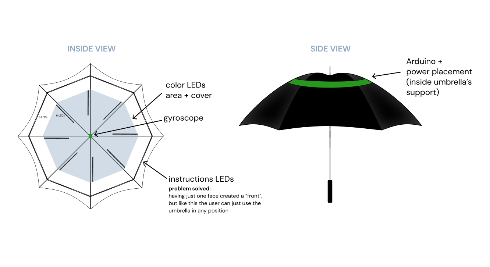
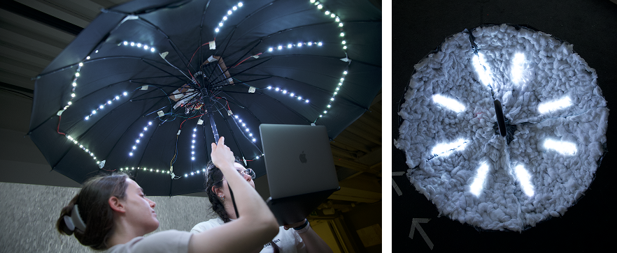
New integrated interactions
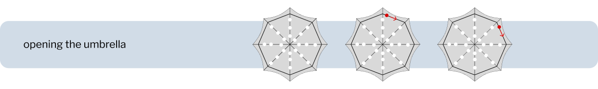
At the beginning, a LED turning around the circumference prompts the user to twirl the umbrella.
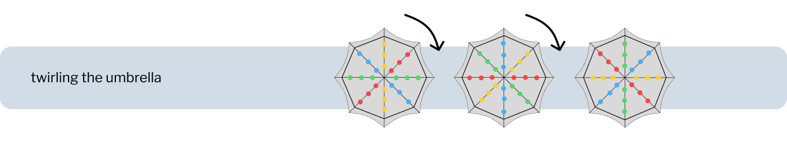
After the twirl the colours of the personal image continue spinning around the umbrella.
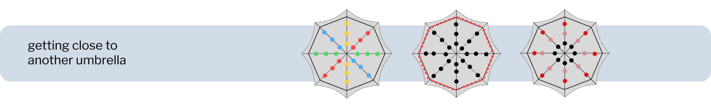
When one umbrella approaches another it gets contaminated with the other's colours.
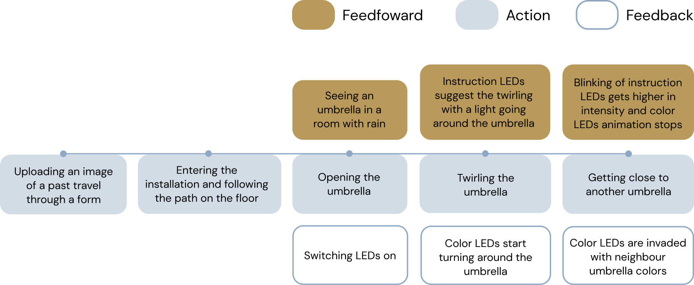
The testing setting
Conducted in Politecnico di Milano's Edme Lab — a meditative space with rain projected on three walls and ambient rain sound throughout the experience.
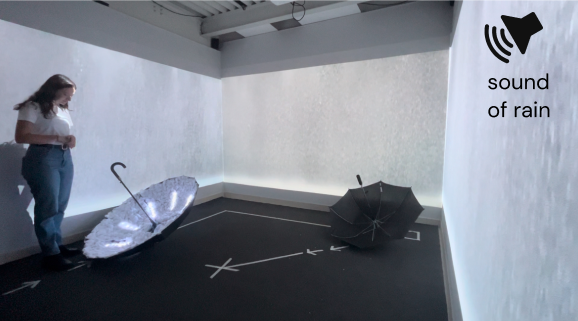
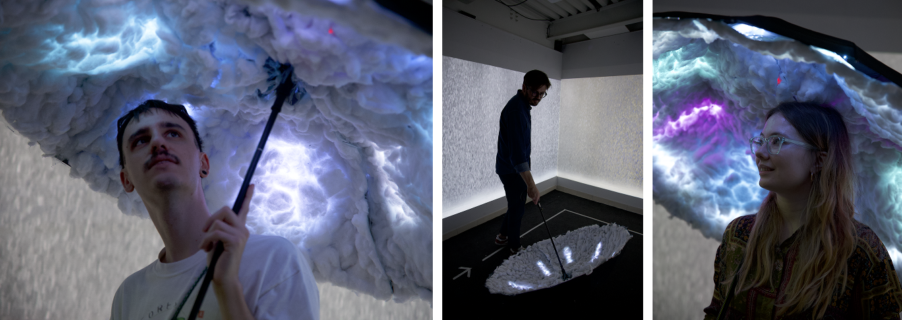
Storyboard
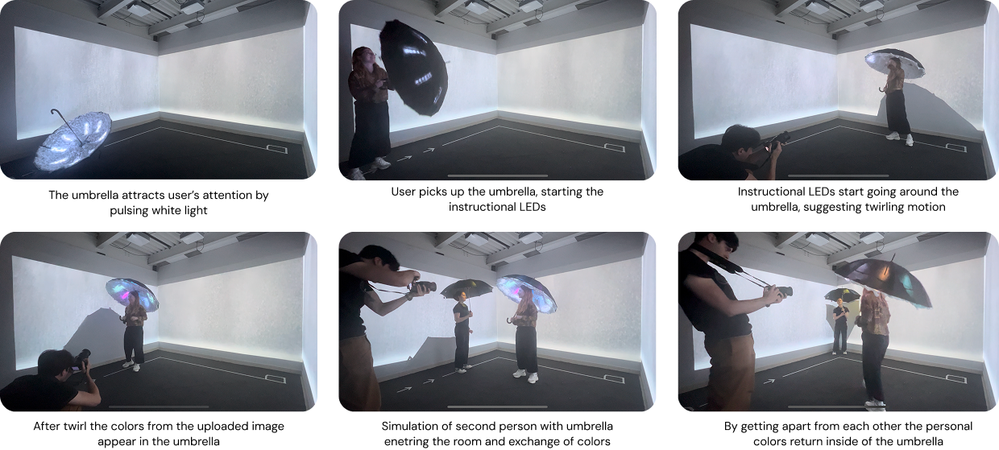
Ideal Scenario
After the second testing session we imagined the ideal scenario: Luma in a public space such as an exhibition, keeping the possibility for users to experiment with a personal or collective experience based on their mood.
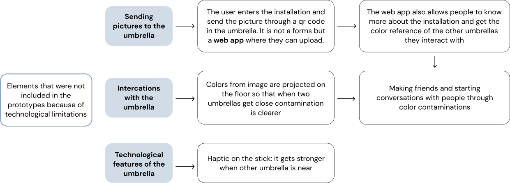
Ideal interaction flow
For the ideal interaction flow we integrated ideas collected during the second testing's interviews and questionnaire.
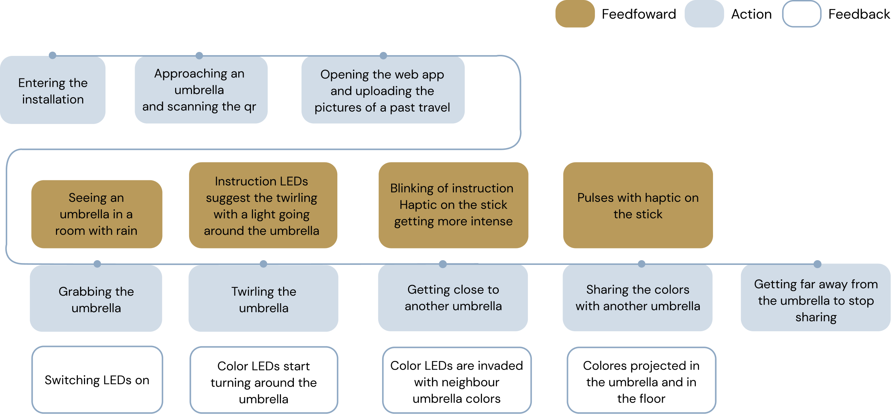
Reflection
Luma is the project I'm most emotionally attached to, because the design problem was fundamentally about feeling rather than function. There's no right or wrong way to experience a memory — which made the design challenge much harder and more interesting than a typical UX brief.
Running the user testing was where I learned the most. The first round quickly revealed that the interaction wasn't as intuitive as we assumed: people didn't naturally understand the twirling gesture, and many stood still rather than moving through the space. What I found valuable wasn't just discovering those problems — it was realising how differently people experience the same interaction.
The second round, after integrating a clearer path, the ESP32 upgrade, and the rain projections, confirmed that context and atmosphere matter as much as the interaction itself. Setting shapes meaning. That's a lesson that applies far beyond installation design.
Credits
Professors: Fiammetta Costa, Carlo Emilio Standoli
Team: Camila Contreras, Francesco Scaramuzzi, Alessandra Sgariglia, Sara Sorrentino, Andrea Villarreal